Silicon failure is not equivalent to silicon fracture
Silicon stores lithium through alloy formation rather than graphite-like intercalation. The resulting Li–Si phase evolution produces large and spatially nonuniform chemical strain. In a practical composite electrode, that strain is constrained by neighboring particles, the carbon–binder network, the current collector, the separator, and the cell fixture. Silicon therefore does not merely expand and contract: it develops stress gradients, plastic deformation, fracture, void formation, changing interparticle contact, and an evolving pore network.
These structural changes continuously alter the electrochemical interface. Newly exposed or insufficiently passivated surfaces consume electrolyte and cyclable lithium, while accumulated interphase products increase transport resistance and occupy pore volume. Lithium may also remain trapped in slowly delithiating, highly stressed, or electronically isolated silicon domains. Consequently, capacity can be lost even when much of the original silicon remains physically present.
In silicon–graphite composite anodes, degradation becomes still more coupled. Silicon and graphite differ in equilibrium potential, kinetics, expansion, and relaxation behavior, so their individual states of lithiation can diverge during constant-current charge, constant-voltage hold, rest, and discharge. At the full-cell level, finite lithium inventory, cathode–anode crosstalk, electrolyte availability, stack pressure, and separator deformation determine whether local particle damage remains tolerable or propagates into persistent power and capacity loss.
Silicon-anode degradation should therefore be understood as a feedback system rather than a single sequence of expansion, cracking, and failure. Phase transformation generates mechanical and transport heterogeneity. That heterogeneity accelerates interphase growth, lithium consumption, contact loss, and pore obstruction. The resulting impedance and transport gradients then concentrate subsequent reaction into progressively less uniform regions.
This article follows those couplings from particle to full cell. The dominant pathway depends not simply on silicon content, but on silicon form, particle and composite architecture, electrode loading and porosity, electrolyte and formation, voltage window, temperature, pressure, and available lithium inventory.[1]
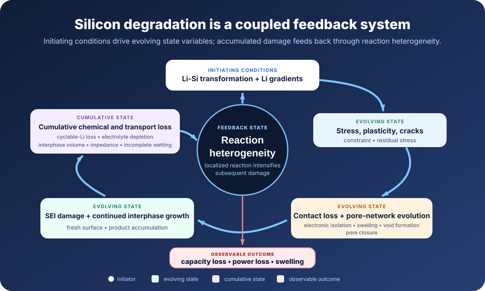
Part I
What Silicon Becomes During Cycling
Begin with the material itself: alloying changes silicon’s phase, structure, shape, and mechanical history before those changes propagate into the composite electrode.
1. Lithiation Changes the Material, Not Just Its State of Charge
Lithiation changes phase and structure
Silicon stores lithium through alloy formation, so increasing state of charge entails extensive atomic rearrangement rather than occupation of a largely preserved host framework. In crystalline Si, lithiation commonly proceeds through reaction-front-mediated amorphization: amorphous LixSi develops beside remaining crystalline Si, and the interface advances as lithiation continues. Amorphous Si begins without that initial crystalline–amorphous boundary, but it still develops lithium-concentration gradients, structural reorganization, and plastic deformation.[2][3]
At deep lithiation, amorphous LixSi may transform into crystalline Li15Si4 at very low silicon potential, often near the terminal region below approximately 50 mV versus Li/Li+. The transition does not occur at one universal voltage. Its occurrence and extent depend on particle size, starting structure, stress, current density, temperature, lower cutoff potential, and prior cycling history.[2][3]
The transformation is path-dependent and partly irreversible
The first lithiation creates a material that differs from the silicon originally coated. Crystalline regions may amorphize, while residual stress, porosity, interphase products, and some degree of retained lithium may remain after delithiation. Lithium removal therefore does not simply retrace the original transformation, and later-cycle voltage, phase evolution, and stress are not repetitions of the first cycle.
Nonuniform transformation produces nonuniform strain
Lithiation also varies within and between particles. Reaction-front morphology, surface-to-core concentration gradients, crystallographic anisotropy, and local differences in ionic access or electronic connection create different states of lithiation at the same time. Because lithium concentration determines local chemical strain, expansion and stress become heterogeneous in both space and time.
Particle expansion does not map directly onto cell swelling
Particle-level volume change, coating-thickness evolution, and pouch-cell swelling are different observables. Initial porosity can accommodate part of the particle expansion. Particle rearrangement, binder and carbon deformation, gas generation, interphase accumulation, and external stack stiffness then determine how much deformation appears at electrode or cell level. Classic in situ microscopy of lithium-alloy films established the magnitude and irreversibility that can accompany an initial alloying cycle, but practical composite electrodes redistribute that deformation through a more complex porous architecture.[4]
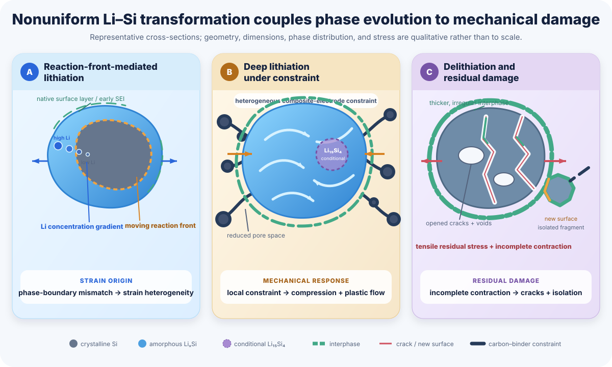
2. Chemo-Mechanical Degradation Inside Silicon
How chemical strain becomes stress
Alloy formation produces a local chemical strain. If a silicon region could expand without constraint, it would change dimensions without developing substantial mechanical stress. In an electrode, however, expansion is resisted by remaining unlithiated silicon, neighboring particles, the carbon–binder network, adhesion of the composite coating to the current collector, and—in a full cell—the surrounding stack. Chemical strain is therefore translated into a spatially heterogeneous stress field whose magnitude and sign depend on geometry, phase distribution, lithiation direction, and boundary conditions.
Geometry determines how this coupling develops. A nanowire, a substrate-bound film, a dense micron-scale particle, and a porous secondary particle can exhibit substantially different stress distributions even at the same average lithium content. Average state of lithiation is therefore insufficient to define the mechanical state.
How stress produces residual deformation and damage
Lithiated silicon can deform plastically. Because lithiation and delithiation are nonuniform and mechanically constrained, this plastic flow can leave irreversible shape change, internal voids, and residual stress after current reversal. In situ wafer-curvature measurements on substrate-bound amorphous-Si films directly resolved compressive stress and plastic flow during lithiation, followed by tensile stress during delithiation and stress–potential relaxation after current interruption.[5] These measurements establish the coupling between composition, stress, and electrochemical potential, although the biaxial constraint of a thin film is not equivalent to that of a particulate composite electrode.
During lithium removal, nonuniform contraction and tensile unloading can open or propagate flaws, promote interfacial debonding, and generate voids. Crack initiation can nevertheless occur during either half-cycle, depending on geometry, local stress, and prior damage.
Lithiation generates large deformation and heterogeneous stress, whereas delithiation can expose damage that is not obvious at maximum expansion. Recent microscopy combined with reactive-force-field modeling of micrometer-scale Si reported pronounced material redistribution during delithiation, including branched Si-rich morphologies within the interphase region.[6] This system-specific result highlights delithiation as an active stage of morphological degradation rather than a simple reversal of lithiation; it should not be interpreted as a universal morphology for every silicon material.
Fracture can accumulate progressively
Shi and co-workers examined repeated cycling of a 500 µm single-crystal Si(100) wafer model electrode. Orthogonal surface cracks accumulated with cycling, while cross-sectional FIB-SEM and modeling showed vertical propagation through the progressively lithiated region followed by lateral deflection near the boundary between lithiated and unlithiated silicon.[7] The wafer geometry isolates anisotropic crack initiation and propagation, but its dimensions, planar constraint, lithiation depth, and surface condition differ substantially from those of practical particulate Si–C or SiOx composite electrodes.
The broader implication is nevertheless important: mechanical degradation need not occur as a single catastrophic pulverization event. Crack networks, interfacial separation, and local delamination can accumulate long before complete fragmentation or abrupt electrochemical failure.
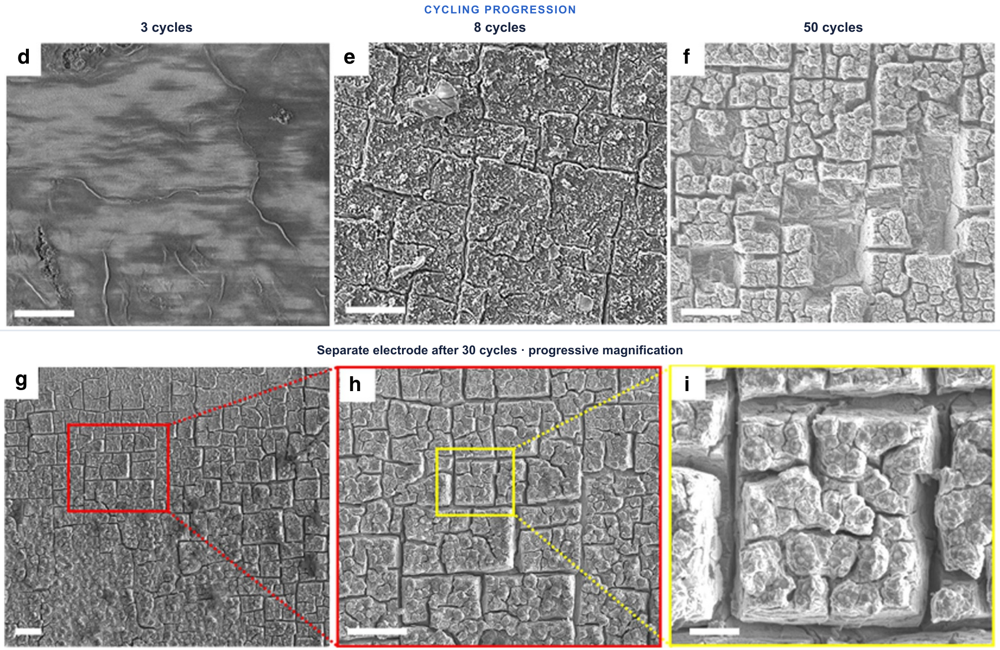
Smaller particles exchange fracture resistance for interfacial burden
Reducing particle size can decrease stress concentration and suppress catastrophic fracture below geometry- and condition-dependent critical dimensions.[8] It does not eliminate degradation. Greater specific surface area generally increases native-surface and SEI burden and lowers first-cycle efficiency. Nanostructured powders also often exhibit lower tap density, greater binder and conductive-network demand, and more difficult dispersion or compaction, although these penalties depend strongly on secondary-particle and composite architecture.[9][10]
Particle size is therefore a design variable rather than a durability metric by itself. Micron-scale silicon may offer lower interfacial burden, higher tap density, and more scalable processing, but it requires an electrode architecture capable of accommodating fracture, displacement, and repeated interphase growth.
Part II
How Particle Damage Becomes Electrode Degradation
Particle damage becomes electrode degradation only when it disrupts electrochemical access or creates irreversible chemical loss. Part II follows that transition through electronic and ionic connectivity, interphase instability, and the finite cyclable-lithium inventory of the full cell.
3. How Particle Damage Becomes Electrode-Level Capacity Loss
Particle fracture does not automatically remove capacity. A cracked silicon domain can remain electrochemically active if its fragments retain electronic connection to the conductive network, ionic access through wetted pores, and interphase transport resistance low enough to support the applied current. Conversely, a particle that appears structurally intact may become inactive if it is electronically disconnected, surrounded by blocked pores, or covered by a sufficiently resistive interphase.
The critical transition from particle damage to electrode degradation is therefore a loss of electrochemical access. Repeated expansion and contraction can yield the binder, separate silicon from conductive carbon, increase particle–particle contact resistance, and weaken adhesion between the composite coating and the copper current collector. Contraction can then open gaps that are not fully recovered in the next cycle.
The ionic network evolves at the same time. Silicon expansion can narrow or close electrolyte pathways; delithiation may reopen some pores but can also generate voids or leave isolated domains. Deposits that occupy pore volume further increase transport resistance. The resulting evolution is not a simple reversible thickness change. Electronic connectivity, wetted porosity, tortuosity, and reaction distribution all acquire cycling history.
These changes produce distinct forms of inactivity. A cracked domain may remain active. An electronically isolated domain may remain wetted yet be unable to exchange electrons with the external circuit, while an ionically blocked domain may remain connected to carbon yet be unable to exchange lithium at the required rate. As accessible area becomes less uniform, reaction shifts toward the remaining well-connected regions, increasing local current density and accelerating further damage.
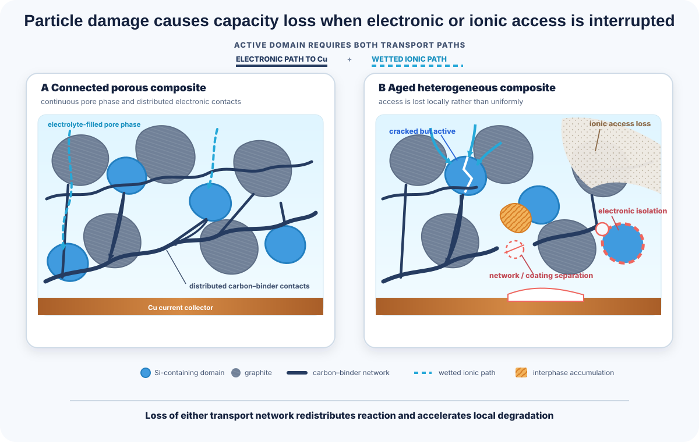
The relevant electrode-level question is therefore not simply whether silicon has fractured, but whether the composite maintains continuous electronic and wetted ionic pathways throughout the required state-of-charge range.
The same cracks and gaps that interrupt transport also create fresh or insufficiently passivated surface. Electrode disconnection and interphase growth therefore develop together, although they are separated here for diagnosis.
4. Mechanical and Chemical Instability of the Silicon SEI
The solid–electrolyte interphase on silicon is not simply a thicker version of the graphite SEI. Graphite undergoes comparatively modest dimensional change and can often establish a more persistent passivating layer after formation. Silicon continuously changes surface area, curvature, stress, and local contact as it alloys and dealloys with lithium. Its interphase must therefore remain electronically passivating while accommodating substantial substrate deformation. This coupling between mechanical and chemical instability is central to modern silicon-degradation frameworks.[1]
Mechanical damage exposes new reactive surface
During lithiation, silicon expansion can subject the existing interphase to tension, compression, shear, buckling, and local detachment. Cracks and gaps expose fresh silicon or incompletely passivated surfaces, allowing further electrolyte reduction. The resulting products may restore local coverage, but this renewed passivation is not equivalent to beneficial healing: it consumes cyclable lithium and electrolyte and increases irreversible interphase volume.
Some regions may remain covered while others repeatedly open and reform. Products then accumulate on external surfaces, within cracks, and around fragments, producing heterogeneous interphase thickness and resistance.
Chemical instability continues without visible cracking
Continued loss does not require a large mechanical rupture event. Organic interphase species may dissolve into the electrolyte, metastable products may convert, acidic impurities such as HF may alter composition, and incompletely passivated regions may sustain parasitic electron transfer. The silicon interphase can therefore continue evolving during both cycling and storage.
Measurements on model silicon electrodes have detected persistent parasitic current during calendar aging, even in the absence of a large repeated dimensional swing.[11] Broader studies of silicon-containing cells likewise identify storage aging as a distinct practical limitation rather than treating degradation as exclusively cycle-driven.[12] The magnitude of these effects remains strongly dependent on silicon form, electrolyte, state of charge, temperature, and cell design.
Interphase growth moves into the particle and pore network
As cracks, voids, and internal surfaces develop, the electrochemically active interface no longer remains confined to the original particle exterior. Electrolyte can penetrate newly opened pathways, and reduction products can form progressively deeper within Si-containing structures. Three-dimensional and cryogenic microscopy has shown interphase growth toward the silicon interior, accompanied by pore filling and loss of electronic continuity.[13]
This internal growth consumes pore volume, traps electrolyte inside increasingly resistive structures, and can separate active silicon regions from the external carbon network. An interfacial problem can thereby evolve into coupled ionic restriction and electronic isolation.
Repeated passivation consumes lithium, electrolyte, and pore volume
Each episode of renewed electrolyte reduction generally consumes cyclable lithium and either consumes or immobilizes electrolyte. Subsequent dissolution or conversion may further destabilize the interphase without an identical lithium cost. In lean-electrolyte cells, loss of free liquid can produce local solvent or salt imbalance, incomplete wetting, and rising ionic resistance even without complete separator pore collapse. Gas generation and soluble products can further redistribute electrolyte and pressure.[14][15]
Electrolyte depletion, interphase-volume growth, and loss of cyclable lithium are therefore coupled cumulative state variables. They alter local transport and shift subsequent reaction toward the remaining accessible regions.
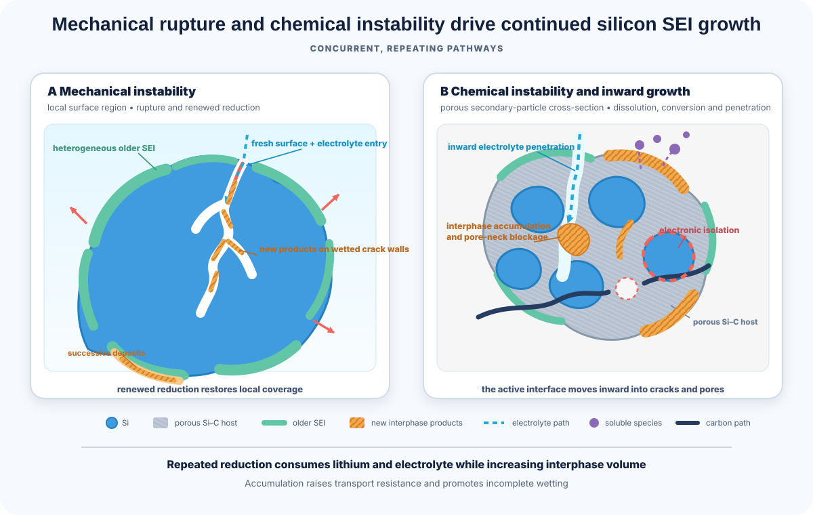
The design target is balanced stability
A durable silicon interphase must remain electronically passivating while accommodating substrate deformation and limiting dissolution, renewed reduction, and transport resistance. Rigidity, elasticity, adhesion, inorganic content, and controlled slip are not independent objectives. Their value depends on whether the combined interphase minimizes cumulative lithium, electrolyte, and pore-volume loss under the required cycling and storage conditions.
Interphase growth does more than raise resistance. It removes lithium from the usable inventory and can leave additional lithium retained inside connected or isolated Si domains. The resulting capacity loss must therefore be separated into inventory loss, host loss, and incomplete recovery.
5. Lithium Inventory Loss, Trapping, and Incomplete Recovery
The full cell has a finite cyclable inventory
A lithium-metal half cell contains a large external lithium reservoir that can mask continuing lithium consumption at the working electrode. A practical full cell generally does not. Lithium incorporated into interphase products, consumed by side reactions, or retained in inaccessible negative-electrode domains must ultimately come from the finite cyclable inventory supplied by the positive electrode or any deliberately added lithium source. Capacity can therefore decline even while most of the original silicon remains physically present.
Capacity is retained only to the extent that lithium, positive-electrode capacity, and negative-electrode capacity remain mutually accessible within the operating voltage window.
LLI, LAM, and inaccessibility are related but not identical
Degradation analysis commonly distinguishes loss of lithium inventory (LLI), loss of active material (LAM), and capacity that is temporarily inaccessible because of polarization, slow transport, or incomplete relaxation. These categories are useful, but they are not always experimentally independent.[1]
Lithium chemically incorporated into SEI products is directly associated with LLI. The associated interphase may subsequently block surfaces or isolate domains, but those are secondary consequences of the lithium-consumption event. Here, “apparent LAM” includes host capacity that remains physically present but is inaccessible under the diagnostic protocol.
An electronically isolated lithiated Si fragment couples inventory and host loss. The silicon domain is removed from the active negative-electrode population, while the lithium retained inside it can no longer return to the positive electrode. Here, “effective LLI” means lithium that remains physically present in the negative electrode but is unavailable to return to the positive electrode through the cell’s accessible operating pathway. Depending on the diagnostic framework, the same event may appear as negative-electrode LAM, effective LLI, or a coupled contribution from both.
Classification therefore depends on the reference state, host connectivity, test endpoint, and whether capacity can be recovered through lower rate, longer rest, or a modified voltage protocol. Structural rearrangement may change usable capacity without physically removing either silicon or lithium.
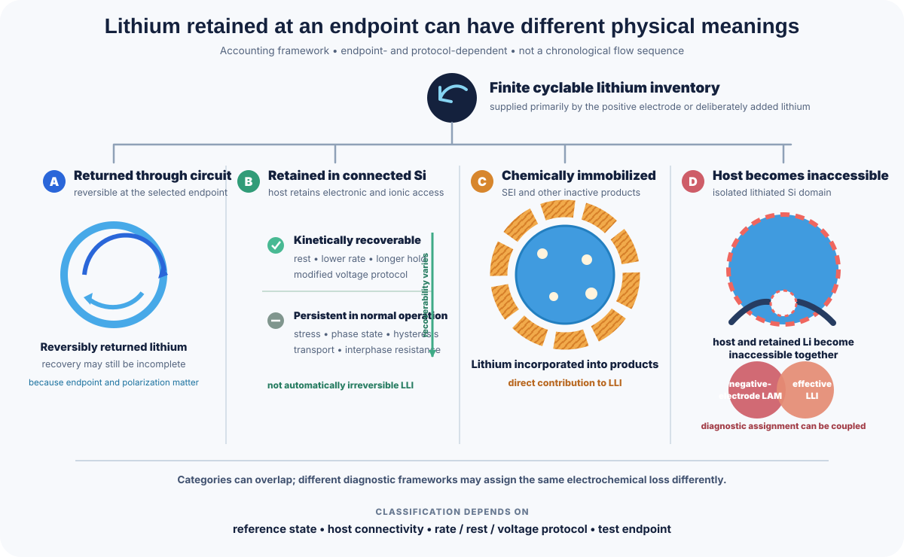
Retained lithium has different degrees of recoverability
Here, retained or “trapped” lithium means lithium remaining in Si-containing domains after the nominal delithiation endpoint. Several physically different states can produce that observation.[1]
Lithium may be kinetically retained because transport or interfacial reaction is too slow at the applied rate. In an amorphous-Si thin-film model, Bao et al. quantified trapped Li–Si alloy alongside SEI-bound lithium and observed trapped alloy intermixed with insulating SEI; that result does not establish every cause of retention in a composite electrode.[16] Stress, phase state, voltage hysteresis, and interphase resistance can shift the local delithiation condition, while electronic or ionic isolation can prevent further reaction.[17]
Recovery during extended rest, lower-rate delithiation, or a modified voltage protocol indicates that at least part of the apparent loss was reversible on a longer timescale. Absence of recovery does not identify the cause by itself; phase retention, chemical immobilization, and connectivity loss can produce similar outcomes.
Stress and relaxation complicate the endpoint
Mechanical stress contributes to lithium chemical potential in LixSi. Compressed and tensile regions therefore need not delithiate at the same local lithium content, potential, or rate.[17] A uniform terminal voltage does not imply a uniform lithium activity or state of delithiation throughout the silicon electrode. Redistribution during rest can also alter the apparent amount of retained lithium; component-to-component redistribution in silicon–graphite electrodes is considered in the next section.
Coulombic efficiency measures imbalance, not mechanism
Coulombic efficiency is sensitive to the net imbalance between charge inserted and recovered, but it does not identify where the missing lithium resides or which mechanism caused the loss. As a purely mathematical illustration, repeatedly retaining 99.9% of an identical reference quantity over 500 repetitions gives 0.999500 ≈ 0.61. This is not a direct prediction of cell-capacity or lithium-inventory retention because charge throughput, accessible inventory, and parasitic pathways evolve during aging.
Persistent sub-percent irreversible currents can become consequential over long cycling. High-precision CE should therefore be interpreted together with cumulative irreversible capacity, changing charge throughput, and independent evidence of where lithium or active material becomes inaccessible. A stabilized CE value alone establishes neither long-term durability nor mechanism.
Part III
Why Practical Cells Fail Differently
The evolving electrode architecture also changes how swelling force is transmitted into the separator and surrounding stack. Composite-component coupling, finite full-cell inventory, pressure, separator response, and cell format introduce failure pathways that isolated silicon particles or lithium-metal half cells cannot reproduce.
6. Silicon–Graphite Coupling Within Composite Anodes
Why component states diverge
Silicon and graphite are electrically connected within the same negative electrode, but they do not necessarily lithiate and delithiate in proportion to their nominal capacity. Their equilibrium potentials, kinetic response, voltage hysteresis, transport environment, and dimensional change differ. The same terminal voltage can therefore correspond to different distributions of lithium between the two components.
This component coupling has both electrochemical and mechanical forms. Electrochemical coupling arises from differences in reaction potential, graphite staging, silicon alloying behavior, local overpotential, and transport resistance. Mechanical coupling arises because silicon expansion changes contact pressure, pore volume, and the local environment experienced by neighboring graphite particles.[1]
Internal redistribution requires ionic and electronic pathways
During constant-current charge, silicon and graphite may carry different fractions of the total current as their local overpotentials evolve. During a constant-voltage hold or subsequent rest, their lithium chemical potentials may remain unequal. One component can then release lithium while the other accepts it through electron conduction in the composite network and ionic transport through electrolyte-filled pores, even when the externally measured current is small or zero.
This redistribution is neither continuous nor universal. Its direction and magnitude depend on state of charge, prior current history, relaxation time, temperature, pressure, particle size, and the evolving resistance of each component.
Mechanical coupling changes both reaction environments
Silicon swelling can compress graphite-containing regions, reduce local pore volume, change particle contact, and alter the pressure-sensitive graphite staging response. Graphite packing and stiffness, in turn, constrain silicon expansion and influence the stress field around Si-containing domains. Silicon and graphite therefore do not age as independent powders mixed into the same coating.
What the Moon reconstruction measured—and inferred
Moon and co-workers investigated this interaction using operando X-ray diffraction in a silicon–graphite pouch cell.[18] Graphite staging was tracked experimentally and used to reconstruct graphite lithium content over the cell cycle. The silicon contribution was inferred from total cell capacity through subtraction and model-assisted analysis, so the curves combine experimental measurement and analytical reconstruction rather than two independently measured component capacities.
The reconstructed response indicates age-dependent divergence in component utilization, discussed directly in the figures below.
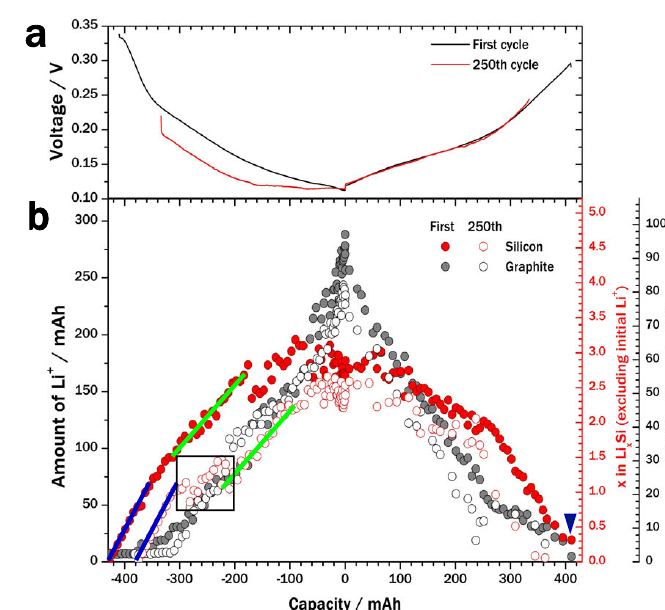
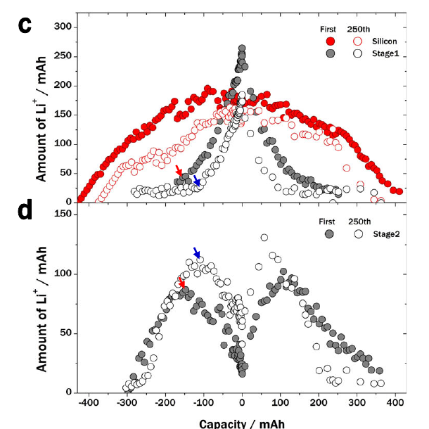
Nominal silicon fraction is not a sufficient descriptor
Capacity fade in a silicon–graphite electrode cannot be assigned to silicon alone: component redistribution, altered graphite response, and mechanical interaction evolve together. Nominal silicon weight fraction is therefore incomplete as a design descriptor. Electrodes with the same Si wt% can differ substantially in silicon capacity contribution, particle size, spatial dispersion, secondary-particle architecture, binder and carbon topology, graphite morphology, porosity, pressure response, and component-level utilization. These variables determine whether silicon and graphite remain electrochemically balanced or progressively diverge during aging.
7. Full-Cell and Cell-Stack Degradation
Silicon-induced deformation does not remain confined to the negative-electrode coating. In a constrained full cell, local expansion is transmitted through particle contacts, the separator, and adjacent electrodes. Thickness, force, contact pressure, and ionic transport consequently change with state of charge and aging.
The resulting stress field depends on cell format. Planar compression in a pouch fixture is not mechanically equivalent to the radial and circumferential constraint of a wound cylindrical or prismatic cell. Tabs, edges, winding curvature, local thickness variation, and package stiffness introduce additional nonuniformity.
Pressure can preserve contact or restrict transport
Moderate stack constraint can maintain particle contact and suppress gross coating separation. Excessive constraint can preserve macroscopic contact while increasing local particle stress, narrowing pores, displacing electrolyte, and concentrating load at particle–separator contacts.
Four mechanical quantities must be distinguished. Nominal fixture pressure is the applied boundary condition. Average stack pressure is a spatially averaged response. Swelling force evolves with state of charge and age. Local contact stress acts over a limited footprint and can therefore greatly exceed the nominal pressure.
Moon et al. combined electrochemical, dilatometric, and mechanical measurements in a silicon–graphite pouch cell.[18] Thickness, force, and component reaction evolved differently during constant-current charge, constant-voltage hold, rest, and discharge. Neither thickness nor force is therefore a simple linear proxy for silicon capacity: graphite staging, silicon reaction, relaxation, pressure history, and cell architecture all contribute.
The useful engineering target is not maximum applied pressure, but a validated pressure window that maintains contact without producing damaging local stress, pore restriction, or electrolyte displacement.
Local separator compression can redirect ionic transport
Seo et al. described a mechanically induced separator “shutdown,” distinct from the thermally activated pore-closure function of conventional polyolefin separators.[19] Under their high-loading, constrained full-cell conditions, silicon expansion concentrated stress at Si-particle–polyethylene-separator contacts, locally collapsed pores, and reduced ionic transport.
The tested system used a pure micro-Si negative electrode, an NCMA positive electrode, a polyethylene separator, high negative-electrode areal capacity, and 100 kPa external stack pressure. Separator deformation was not observed without externally applied stack pressure under the reported conditions.
Under those conditions:
- average SECM current decreased from approximately 148 pA before cycling to approximately 11 pA after 400 cycles;
- separator ionic conductivity in the mechanical-compression experiment decreased from approximately 1.44 to 0.02 mS cm−1; and
- estimated local pressure reached approximately 6 MPa.
These values support a specific mechanism in the studied geometry, not a universal pressure threshold for silicon cells. When local pores close, ionic flux can be diverted through the remaining open pathways. The resulting current-density redistribution may overutilize nearby accessible Si-containing regions.
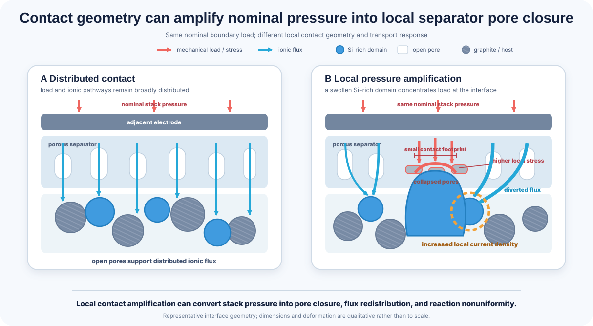
Chemical crosstalk couples the electrodes
Full-cell degradation also includes chemical exchange between electrodes. Cathode-derived transition-metal species can migrate to the negative electrode and alter its interphase; HF-containing chemistry has been implicated in transition-metal dissolution and subsequent anode deposition.[20] Both electrodes also draw from finite lithium, additive, solvent, and salt inventories. Gas and soluble products can modify wetting and pressure distribution, coupling chemical degradation to cell mechanics.
Operating conditions determine the dominant pathway
High temperature accelerates interphase reactions and dissolution. Low temperature and fast charge increase polarization and spatially uneven reaction. Storage at high anode lithiation can intensify chemical aging, while gas generation and fixture stiffness alter contact and pressure distribution. Claims about full-cell or separator failure should therefore specify rate, temperature, state of charge, applied constraint, electrode loading, separator type, and cell format.
Part IV
From Failure Diagnosis to Material Design
Capacity fade is an outcome, not a diagnosis. Reliable attribution requires matched electrochemical, structural, chemical, and mechanical evidence, followed by material and cell design that addresses the confirmed pathway.
8. Why Cycling Curves Cannot Identify the Mechanism
A falling capacity curve does not identify whether the dominant loss arises from cyclable-lithium consumption, active-material isolation, interphase resistance, restricted ionic transport, electrolyte depletion, lithium plating, or positive-electrode degradation. Similar retention curves can conceal different future risks, while the same mechanism can produce very different retention depending on rate, temperature, loading, pressure, and cell balance.
Mechanism-resolved diagnosis requires converging evidence. Electrochemical measurements identify when charge becomes inaccessible. Structural and mechanical characterization shows where connectivity, porosity, or stack geometry changed. Chemical analysis identifies what was consumed, formed, dissolved, or deposited. No one evidence class is sufficient by itself.[21]
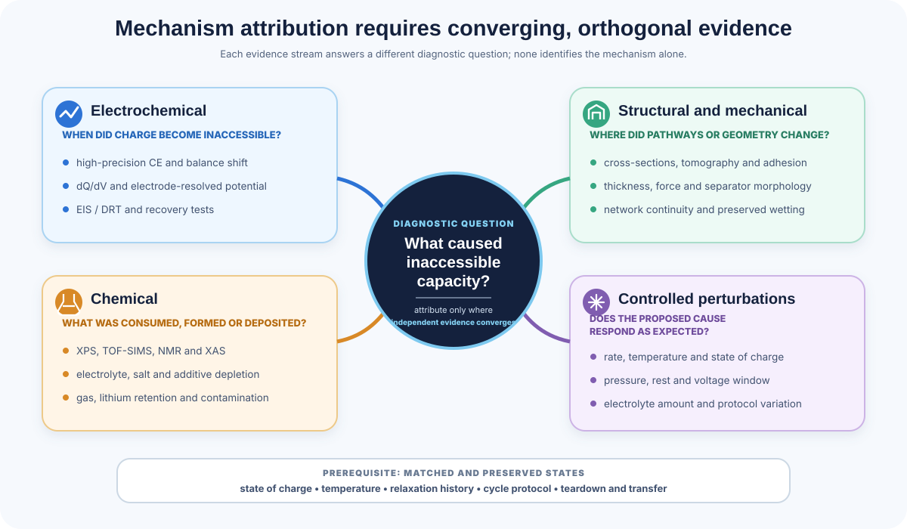
Ask whether lithium is lost or only inaccessible
High-precision Coulombic efficiency, electrode-resolved potential, differential-capacity analysis, and full-cell balance shifts can reveal irreversible imbalance, but they do not locate the missing lithium. Rest, lower-rate recovery, modified voltage windows, and lithium-sensitive methods such as solid-state NMR, XAS, or quantitative titration help distinguish permanent inventory loss from kinetically retained or stress-dependent lithium. Lithium retained in an isolated host can couple effective LLI with negative-electrode LAM.
Determine whether electronic or ionic access has failed
Rate-dependent capacity loss can arise from electronic isolation, pore restriction, incomplete wetting, thick interphase, or separator compression. Cross-sectional imaging, tomography, adhesion analysis, spatial current mapping, and preserved-state wetting measurements help locate the discontinuity. Cracking alone does not establish LAM, and impedance growth alone does not identify whether the dominant restriction is electronic, interfacial, or ionic.
Test whether the interphase is still growing
Persistent irreversible charge after formation, calendar-aging current, solvent or additive depletion, gas evolution, and increasing interphase volume can support continued passivation demand. XPS, TOF-SIMS, solid-state NMR, cryogenic microscopy, and three-dimensional imaging provide complementary information about composition, penetration, and spatial distribution. Surface composition should be connected to electrochemical loss rather than treated as proof by itself.
Treat plating signatures as suggestive, not definitive
An anode potential approaching or crossing 0 V versus Li/Li+ in a reliable reference-electrode measurement is strong evidence of plating risk. Characteristic relaxation, a stripping-like feature during subsequent discharge, CE anomalies, and preserved metallic deposits can add support. None is independently definitive in a conventional two-electrode full cell, particularly when silicon–graphite redistribution and slow relaxation coexist.
Use impedance models cautiously
Equivalent-circuit elements and DRT peaks are mathematical representations, not direct physical labels. A fitted element or relaxation-time feature should not be assigned to SEI growth, charge transfer, pore transport, or contact resistance without complementary evidence. Rate, temperature, pressure, state-of-charge, and rest perturbations can test whether the feature behaves consistently with the proposed mechanism.
Compare matched and preserved states
Samples should be compared at matched state of charge, temperature, relaxation history, and cycle protocol. Otherwise, reversible differences in silicon lithiation, graphite staging, swelling, and interphase potential can be misread as degradation. Air exposure, solvent washing, drying, pressure release, and time after disassembly can also alter lithium metal, SEI chemistry, wetting, and morphology.
9. Material Form Shifts the Dominant Failure Pathway
“Silicon” is not a single material specification. Crystal structure, oxygen content, primary and secondary particle size, composite architecture, silicon weight fraction, and silicon capacity contribution describe different aspects of an electrode. They should not be used interchangeably, and none alone predicts durability.[1][9][22]
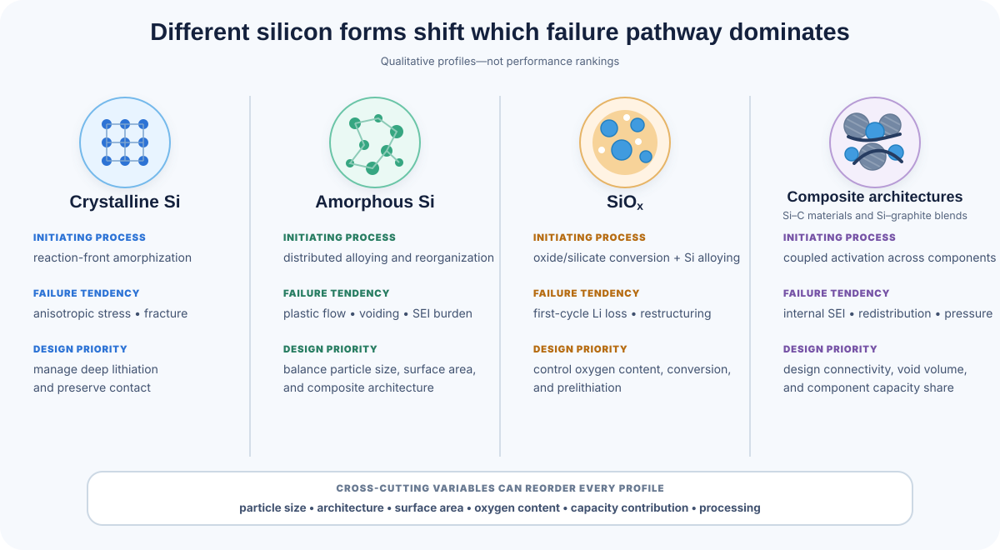
Crystalline elemental silicon commonly undergoes reaction-front-mediated amorphization during early lithiation. Its characteristic risks include anisotropic stress, fracture, and contact loss, especially in larger or highly constrained particles. Deep lithiation may also permit crystalline Li15Si4 formation, depending on cutoff, size, stress, and cycling history.
Amorphous silicon avoids the initial crystalline-to-amorphous reaction front, but not large strain, plastic flow, lithium gradients, voiding, or interphase growth. Its practical behavior is often governed as much by specific surface area and composite architecture as by amorphous structure itself.
SiOx introduces irreversible lithium-consuming reactions that form lithium-containing oxide and silicate phases in addition to lithiated silicon. The surrounding matrix can moderate gross dimensional change, while first-cycle efficiency, prelithiation, internal restructuring, and heterogeneous conversion products become central design variables.
Si–C material composites and Si–graphite electrode blends occupy different classification levels, but both add component coupling. Carbon can support electronic continuity and engineered void volume, while graphite can dilute expansion and enable established processing routes. Internal porosity can increase hidden interfacial area, and mixed electrodes introduce lithium redistribution, pressure interaction, and an evolving fraction of negative-electrode capacity supplied by silicon.
Micron- and nanoscale silicon cut across all of these categories. Smaller primary particles can reduce catastrophic fracture risk but generally increase surface-driven SEI burden, first-cycle loss, binder demand, and processing difficulty. Likewise, “high-content” describes composition or capacity contribution, whereas “amorphous” describes structure; one does not predict the other.
This section is a concise orientation. See Winigen’s dedicated Si–C versus SiOx versus amorphous-silicon comparison for a fuller material-selection treatment.
10. Final Perspective: Silicon Failure Is a Feedback System
Volume change is the initiating material property, not the complete failure mechanism. Li–Si phase transformation creates nonuniform strain; mechanical damage changes surface area, contact, and pore structure; continued passivation consumes cyclable lithium and electrolyte; and rising resistance redistributes subsequent reaction into progressively less uniform regions.
The resulting pathway spans active-material degradation, loss of electrode integrity, mechanical and chemical interphase instability, lithium retention, composite-component coupling, and full-cell pressure or transport effects.[1]
This is why solutions developed in low-loading half cells rarely transfer unchanged into practical full cells. Particle design must be evaluated with binder and carbon topology. Electrolyte testing must reflect realistic surface area, loading, and lithium inventory. Pressure must be assessed with separator and pore response. Cycling protocols must reproduce cathode-limited lithium, component crosstalk, practical areal capacities and electrode loading, temperature, and cell format.
Improving one mechanism can expose another
Smaller silicon may reduce catastrophic fracture while increasing interfacial area and first-cycle lithium loss. Stronger confinement may preserve contact while increasing local stress. A rigid interphase may suppress continued reduction yet fracture under repeated strain. Higher stack pressure may reduce delamination while compressing electrode or separator pores.
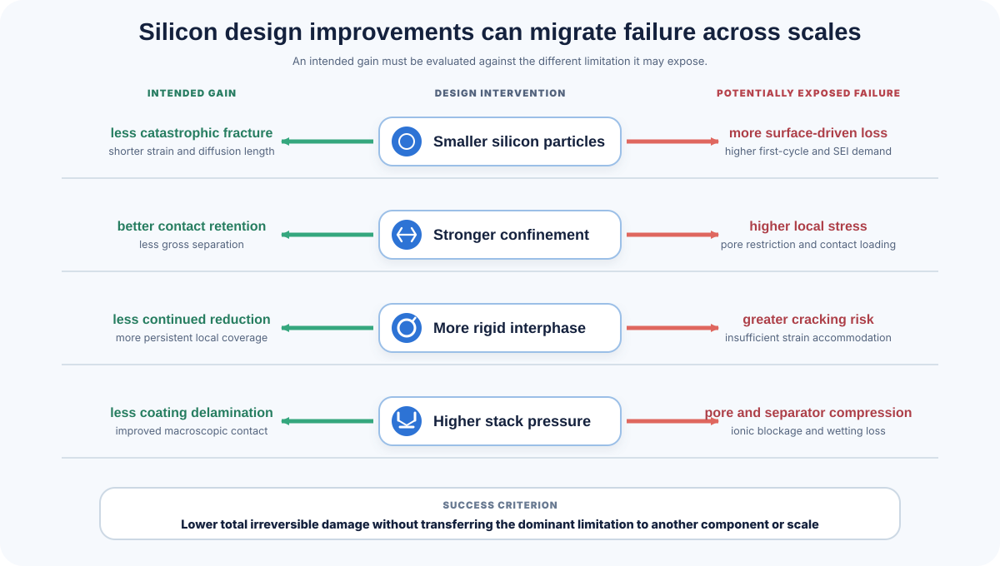
A design change is therefore successful only if it reduces total irreversible damage without shifting the dominant failure into another component or scale.
Irreversible chemical and mechanical change per unit charge throughput must remain low enough to preserve lithium inventory, transport pathways, and mechanical integrity over the target service life.
In practice, this means limiting cumulative lithium and electrolyte loss, irreversible interphase growth, loss of electronic and ionic access, pore obstruction, incomplete wetting, and pressure localization.
Durable silicon anodes will not be achieved by solving particle fracture, SEI chemistry, electrode architecture, or stack mechanics independently. The material, electrode, electrolyte, formation protocol, cell balance, and mechanical boundary conditions must be designed as one coupled system.
References and Further Reading
Figure-use note: Winigen diagrams are original. Only the Shi and Moon characterization figures are reproduced from primary research articles under CC BY 4.0; cropping is disclosed in their captions. No figure from Seo et al. is reproduced because that article is licensed CC BY-NC-ND 4.0. Review figures containing third-party material were not reproduced.
- Choi, Y. J.; Bae, J.-Y.; Park, G.-O.; Yu, S.-H. Degradation Pathways of Silicon-Based Anodes in Lithium-Ion Batteries. Advanced Energy Materials (2026). Review.
- Key, B. et al. Real-Time NMR Investigations of Structural Changes in Silicon Electrodes for Lithium-Ion Batteries. Journal of the American Chemical Society 131, 9239-9249 (2009). Primary research article.
- Obrovac, M. N.; Chevrier, V. L. Alloy Negative Electrodes for Li-Ion Batteries. Chemical Reviews 114, 11444-11502 (2014). Review.
- Beaulieu, L. Y.; Eberman, K. W.; Turner, R. L.; Krause, L. J.; Dahn, J. R. Colossal Reversible Volume Changes in Lithium Alloys. Electrochemical and Solid-State Letters 4, A137-A140 (2001). Primary research article.
- Sethuraman, V. A.; Chon, M. J.; Shimshak, M.; Srinivasan, V.; Guduru, P. R. In situ measurements of stress evolution in silicon thin films during electrochemical lithiation and delithiation. Journal of Power Sources 195, 5062-5066 (2010). Primary research article.
- Foss, C. E. L. et al. Revisiting Mechanism of Silicon Degradation in Li-Ion Batteries: Effect of Delithiation Examined by Microscopy Combined with ReaxFF. Journal of Physical Chemistry Letters 16, 2238-2244 (2025). Primary research article.
- Shi, F. et al. Failure mechanisms of single-crystal silicon electrodes in lithium-ion batteries. Nature Communications 7, 11886 (2016). Primary research article.
- Liu, X. H. et al. Size-Dependent Fracture of Silicon Nanoparticles during Lithiation. ACS Nano 6, 1522-1531 (2012). Primary research article.
- Yan, W. et al. Recent Progress in Silicon-Based Anodes for High-Energy Lithium-Ion Batteries: From the Perspective of “Size Effects.” Carbon Energy 7, e70057 (2025). Review.
- Li, L. et al. Revitalizing Micro-Sized Si-Based Anodes Through Advanced Structural Design and Interface Stabilization: A Review. Small 21, e06603 (2025). Review.
- McBrayer, J. D. et al. Scanning Electrochemical Microscopy Reveals That Model Silicon Anodes Demonstrate Global Solid Electrolyte Interphase Passivation Degradation during Calendar Aging. ACS Applied Materials & Interfaces 16, 19663-19671 (2024). Primary research article.
- McBrayer, J. D. et al. Calendar aging of silicon-containing batteries. Nature Energy 6, 866-872 (2021). Perspective.
- He, Y. et al. Progressive growth of the solid-electrolyte interphase towards the Si anode interior causes capacity fading. Nature Nanotechnology 16, 1113-1120 (2021). Primary research article.
- Xie, C. et al. Recent Advances in Electrolyte Engineering for Silicon Anodes. Batteries 11, 399 (2025). Review.
- Seo, H. et al. A comprehensive review of liquid electrolytes for silicon anodes in lithium-ion batteries. Advances in Industrial and Engineering Chemistry 1, 3 (2025). Review.
- Bao, W. et al. Quantifying Lithium Loss in Amorphous Silicon Thin-Film Anodes via Titration-Gas Chromatography. Cell Reports Physical Science 2, 100597 (2021). Primary research article.
- Li, Y. et al. Chemical Stress in a Largely Deformed Electrode: Effects of Trapping Lithium. iScience 26, 108174 (2023). Primary research article.
- Moon, J. et al. Interplay between electrochemical reactions and mechanical responses in silicon-graphite anodes and its impact on degradation. Nature Communications 12, 2714 (2021). Primary research article.
- Seo, J.-Y. et al. Mechanical shutdown of battery separators: Silicon anode failure. Nature Communications 15, 10134 (2024). Primary research article.
- Zhan, C. et al. Mn(II) Deposition on Anodes and Its Effects on Capacity Fade in Spinel Lithium Manganate–Carbon Systems. Nature Communications 4, 2437 (2013). Primary research article.
- Pervez, A. et al. Advanced Analysis Techniques for Elucidating Failure Mechanisms in Silicon Anodes for Li-Ion Batteries. Small 22, e12223 (2026). Review.
- Kim, T.; Li, H.; Gervasone, R.; Kim, J. M.; Lee, J. Y. Review on Improving the Performance of SiOx Anodes for a Lithium-Ion Battery through Insertion of Heteroatoms: State of the Art and Outlook. Energy & Fuels (2023). Review.
Evaluate Silicon Materials as a Complete Electrode System
Share the silicon material, electrode design, and cell conditions you know. Winigen Materials can help identify the additional specifications and validation data needed to connect material selection with electrode and electrolyte development. For advanced evaluations, useful inputs include silicon capacity contribution, loading, porosity, binder/carbon system, electrolyte, formation, N/P ratio, pressure, and cell format.
Contact Winigen MaterialsAll original Winigen Materials diagrams and visualizations on this page are © Winigen Materials. They may not be reproduced, modified, or redistributed without permission.